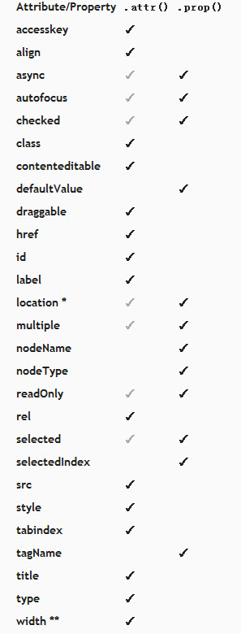

使用jQuery设置checkbox为选择状态时，我们通常会使用
1 | $(this).attr("checked", true); |
但是当你的jquery版本大于1.6的时候，这种只能生效一次，后面你只会看到checkbox的checked属性会增加checked但是现实的状态是没有打钩的。这种情况下你就不能使用$(this).attr(“checked”, checked)这种方法了，需要使用下面的代码：
1 | $(this).prop("checked", true); |
prop()是jquery1.6以上版本的新方法，为什么会有这个方法呢？
prop和attr的区别
prop(propertyName) —— 获取匹配集合中第一个元素的Property的值
它还有另外几种重构函数，如下：
1 | prop(propertyName, value) |
上面的方法是给匹配元素集合设定一个或多个属性。
关于jQuery1.6和1.6.1中Attributes模块变化的描述，以及.attr()方法和.prop()方法的首选使用，如下所示：
Attributes模块的变化是移除了attributes和properties之间模棱两可的东西，但是在jQuery社区中引起了一些混乱，因为在1.6之前的所有版本中都使用一个方法(.attr())来处理attributes和properties。但是老的.attr()方法有一些bug，很难维护。jQuery1.6.1对Attributes模块进行了更新，并且修复了几个bug。
1 | elem.checked true (Boolean) Will change with checkbox state |
1 | if(elem.checked) |
以上三个都是返回Boolean值。
为了让jQuery1.6中的.attr()方法的变化被理解的清楚些，下面是一些使用.attr()的例子，虽然在jQuery之前的版本中能正常工作，但是现在必须使用.prop（）方法代替：
| attr() | prop() |
| $(window).attr… | $(window).prop… |
| $(document).attr… | $(document).prop… |
| $(“:checkbox”).attr(“checked”,true) | $(“:checkbox”).prop(“checked”,true) |
| $(“:option”).attr(“checked”,true) | $(“:option”).prop(“checked”,true) |
首先，window或document中使用.attr()方法在jQuery1.6中不能正常运行，因为window和document中不能有attributes。它们包含properties(比如：location或readyState)，必须使用.prop()方法操作或简单地使用javascript原生的方法。在jQuery1.6.1中，window和document中使用.attr()将被自动转成使用.prop，而不是抛出一个错误。
其次，checked,selected和前面提到的其它boolean attributes，因为这些attributes和其相应的properties之间的特殊关系而被特殊对待。基本上，一个attribute就是以下html中你看到的：
1 | <input type="checkbox" checked="checked"> |
boolean attributes，比如：checked，仅被设置成默认值或初始值。在一个checkbox的元素中，checked attributes在页面加载的时候就被设置，而不管checkbox元素是否被选中。
properties就是浏览器用来记录当前值的东西。正常情况下，properties反映它们相应的attributes(如果存在的话)。但这并不是boolean attriubutes的情况。当用户点击一个checkbox元素或选中一个select元素的一个option时，boolean properties保持最新。但相应的boolean attributes是不一样的，正如上面所述，它们仅被浏览器用来保存初始值。
1 | $(":checkbox").get(0).checked = true; |
以上代码将不会检查checkbox元素，因为它是需要被设置的property，但是你所有的设置都是初始值。
然而，曾经jQuery1.6被释放出来的时候，jQuery团队明白当浏览器仅关心页面加载时，设置一些值不是特别的有用。所以，为了保持向后兼容性和.attr()方法的有用性，我们可以继续在jQuery1.6.1中使用.attr()方法取得和设置这些boolean attributes。
最普通的attributes是checked,selected,disabled和readOnly，但下面是jQuery1.6.1支持的使用.attr()动态地取得和设置boolean attributes/properties的完整列表：autofocus, autoplay, async, checked, controls, defer, disabled, hidden, loop, multiple, open, readonly, required, scoped, selected。
还是建议使用.prop()方法来设置这些boolean attributes/properties，即使这些用例没有转换成使用.prop()方法，但是你的代码仍然可以在jQuery1.6.1中正常运行。
下面是一些attributes和properties的列表，正常情况下，应该使用其对应的方法(见下面的列表)来取得和设置它们。下面的是首用法，但是.attr()方法可以运行在所有的attributes情况下。
注意：一些DOM元素的properties也被列在下面，但是仅运行在新的.prop()方法中

.attr()和.prop()都不应该被用来取值/设值。使用.val()方法代替(即使使用.attr(“value”,”somevalue”) 可以继续运行，就像1.6之前做的那样)
首选用法的概述
prop()方法应该被用来处理boolean attributes/properties以及在html(比如：window.location)中不存在的properties。其他所有的attributes(在html中你看到的那些)可以而且应该继续使用.attr()方法来进行操作。